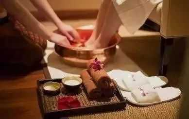

足浴可以刺激穴位，达到养生保健的功效，也能有效的缓解人体疲劳。操作简单方便，所以很多人会随意在家内操作泡脚。但是养生足浴应该怎么做又有多少人知道呢？下面让小编给大家分享一下吧。
一、足浴养生知识
1、最佳时长20~30分钟
泡脚时间不宜过长，以20~30分钟为宜。泡脚不超过20分钟没能发挥应有的保健效果，但泡脚时间过长，血管长时间扩张也不适宜，长时间浸泡也容易使皮肤泡破皮。
2、最佳水温在40℃
水温不能太高，许多人会觉得只要是在自己的承受范围内，水温越高越舒服也能浸泡的越久。其实并不然，泡脚的最佳水温在40℃左右，比人体温度稍微高点便可。
3、水量不可太少
泡脚不同于洗脚，水位最好高一些，以每到膝盖为准，可以对足部和小腿部的穴位都起到作用。
4、浴盆材质选择以木盆为佳
木盆相比其他材料散热较慢，适合长时间泡脚，普通塑料盆或者铁盆十几分钟水就容易变凉。再者，有些木材如樟木、松木性温可以辅助提升泡脚的效果。
5、泡桶注意卫生清洁
泡脚桶若不清洁彻底或者桶壁内没有进行抗菌处理，脚上细菌就容易残留在桶壁内，造成对脚部的反复感染，因此选择好的泡脚桶十分重要。
6、女性经期别乱用中药泡脚
女性经期出现的问题比较复杂，如果不能辨清原因就用中药泡脚，不但不会起到舒缓的作用，还可能会加重痛经等症状。因此，如果女性希望用中药泡脚的方法来打到治疗痛经等经期健康问题的目的，最好能够咨询医生，根据自身情况对症用药。

二、足浴养生禁忌
1、脚上有伤，水疱，疥疮，或脚上发炎、化脓、溃疡、水肿及较重的静脉曲张的人群，也是不适合做足浴的。
2、对于妊辰及月经期重的女性，也是不建议做足浴的，因为中药足浴可能会刺激导腐女的性腺反射区，从而影响妇女及胎儿的健康。
3、对于肾衰竭、心力衰竭、心机梗死、肝坏死等各种危重病人，由于病情很不稳定，对足部反射区的刺激可能会引起强烈反应，使病情复杂化。因此也不舍做足浴。
4、患有各种严重出血的病人，如咯血、吐血、便血、脑出血、胃出血、子宫出血及其他内脏出血等，在进行足底按摩时，可能会导致局部组织内出血，所以说也不适合做足浴。
5、饭前后1小时内进行足浴的人，由于足浴时足部血管扩张、血容量增加，造成胃及内脏血液减少，影响肠胃消化功能。即饭前足浴可能抑制胃液分泌，对消化不利。
6、婴幼儿本身容易发热，爱上火。如果在用较热的水泡脚、发汗，会热上加热，特别婴幼儿对体温的感觉和大人不一样，大人觉得水温烧热，对孩子来说已经是很烫了。但他们又不会表达，所以很容易烫伤柔嫩的皮肤。从这个角度说，也不建议用热水泡脚。每天用温水把小脚好好洗洗就行，洗完后，可以轻轻捏捏脚，打到舒活胫骨的目的。


推动健康产业发展 助力全民健康生活
加入我们，打造 [ 千城万店 · 健康万民 ]
Promote the development of the health industry
上海运营总部：上海青浦区汇龙路695号C栋8楼(叶迪大厦)
华东运营中心：江苏省昆山市花桥镇绿地大道231弄2号楼
西南运营中心：成都市高新区环球中心E1-1212
欢迎关注百龄足官方微信或拨打400客服电话详询！
Welcome to Bailingzu official or call customer service phone for detailed inquiries
 商务合作
商务合作
 在线咨询
在线咨询